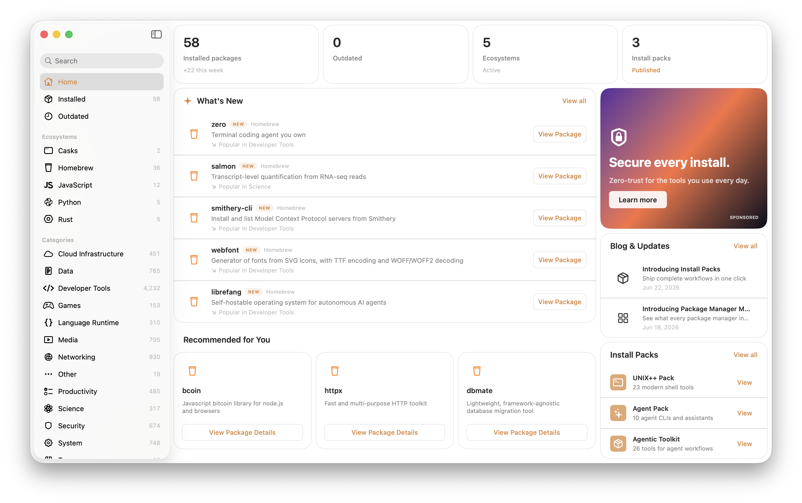
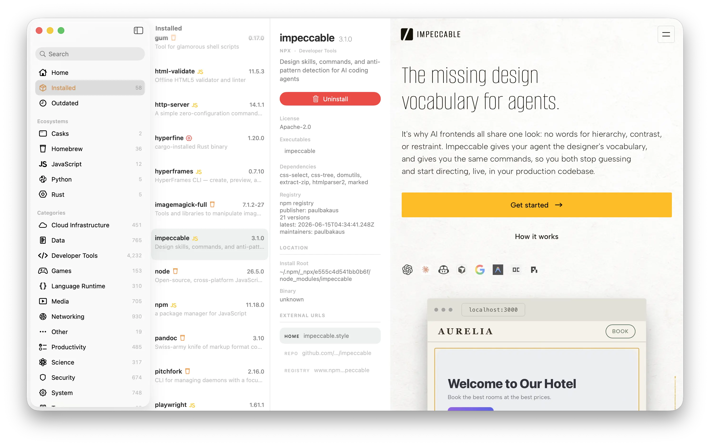

Package sources
Homebrew, APT, apk, DNF, Zypper, mise, Skills, npm, npx, pnpm, Bun, uv, uvx, pipx, Cargo, rustup, and Go, searched together.
Missing one? Just open a ticket and we’ll add it.
 Package Manager Manager
Package Manager Manager
Package Manager Manager for macOS
Package Manager Manager inventories the tools scattered across your package managers, on this Mac or remote Macs and Linux hosts over SSH. See what you have, what needs an update, and where everything came from.
brew install --cask mxcl/made/package-manager-manager
HomebrewAPT + apk + DNF + ZyppermiseSkillsnpm + npx + pnpm + Bunuv + uvx + pipxCargo + rustupGo
Now supporting pnpm, Bun, pipx, and Go.

One honest inventory
Homebrew, APT, apk, DNF, Zypper, mise, Skills, npm, npx, pnpm, Bun, uv, uvx, pipx, Cargo, rustup, and Go, searched together.
Missing one? Just open a ticket and we’ll add it.
Search packages, compare versions, and open their project links without returning to the terminal.
pkg⋅mgr² uses each manager’s own commands. Your setup stays yours.
From install to source
Open a package to see its installed version, install location, binary path, project config files, homepage, repository, and docs. When pkg⋅mgr² knows the native command, update or uninstall it from the same view.

~/.config/direnv/direnv.toml
~/.config/starship.toml
~/.npmrc
Click a path to edit it in your default text editor.
Config files, connected
pkg⋅mgr² surfaces the known configuration and credentials files for each package. Click a path and it opens in your default text editor, ready to change.
One app, more hosts
Add a Mac or Linux host. Its Installed and Outdated lists appear in the sidebar, ready for updates and uninstalls.


Update with context
Open the project’s release notes beside the installed package. Check breaking changes, then run the update when you’re ready.
Cached npx commands and uvx environments count too. If it is taking up space, it belongs in the inventory.
Update and remove supported packages with the manager that installed them.
Missing metadata stays missing. rustup remains inventory-only until its actions are safe and obvious.
FAQ
No. PMM is a manager for package managers; it doesn’t manage packages itself.
Apart from the obvious difference—PMM is a GUI, not a CLI—PMM is a dashboard and monitoring app for your other package managers, not a package manager itself. For example, you can use PMM to manage packages installed by mise across all of mise’s own backends.
Free and open source